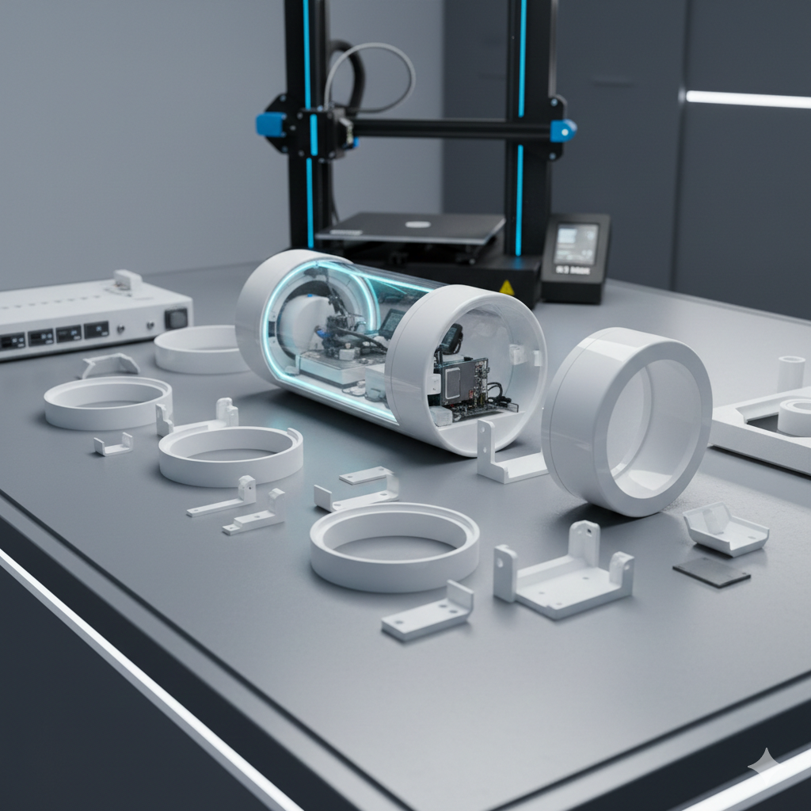
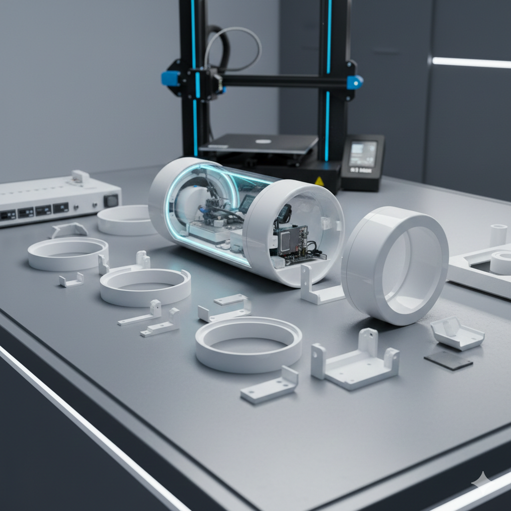
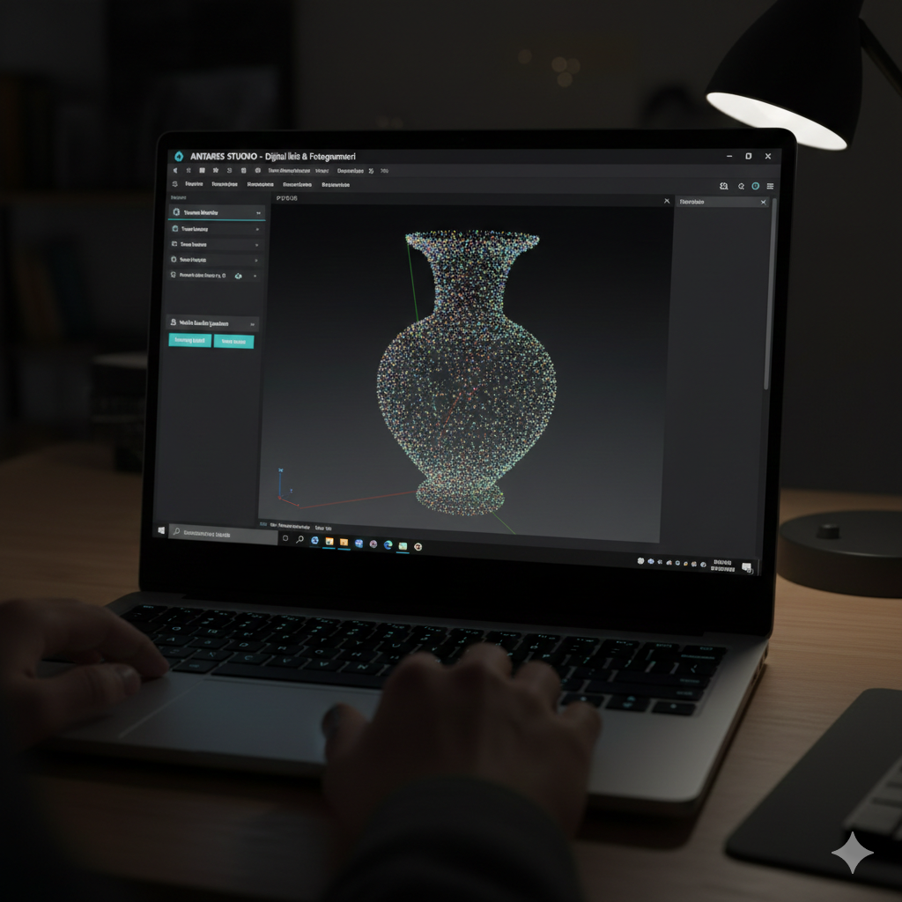
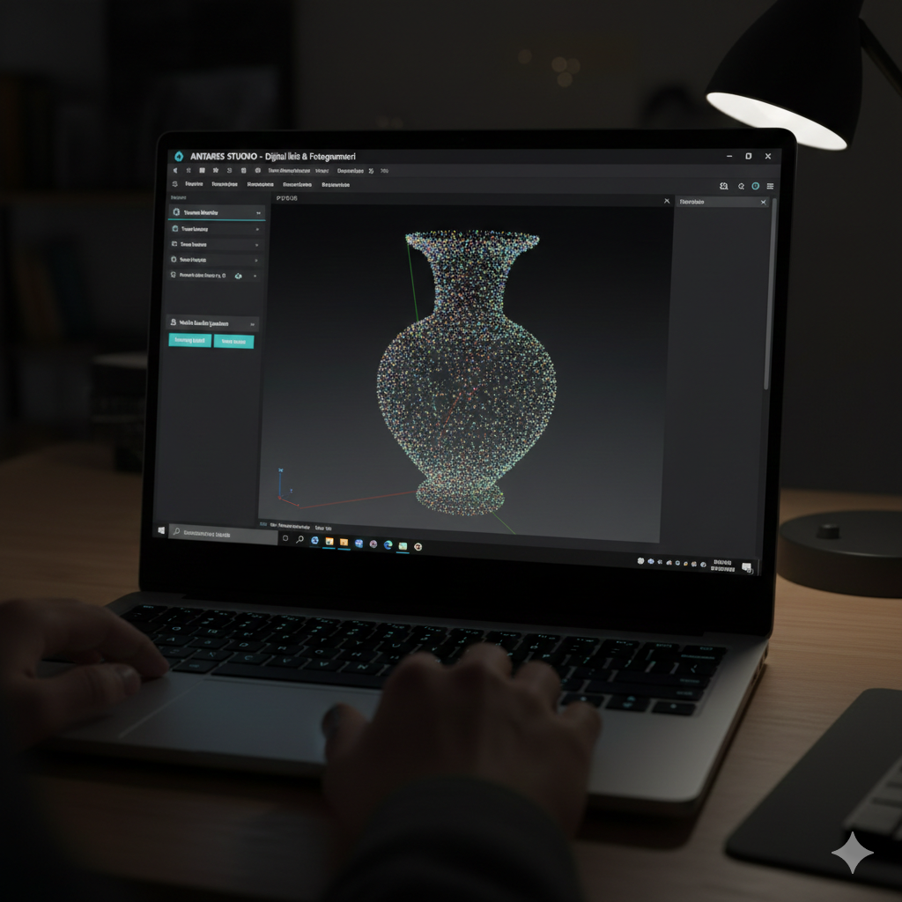

 

ANTARES V8
Autonomous Preservation Ecosystem — Protecting artifacts from the moment they leave the soil.
Soil Memory &
Context Shock
Artifacts survive centuries in stable underground conditions. The moment of excavation exposes them to sudden environmental changes — humidity spikes, temperature fluctuations, and oxidation begin within seconds.
Sensor: YL-69 Soil Moisture
Humidity Delta: +45% RH
Temp Variance: ±12°C
Oxidation Risk: CRITICAL
Creality K1 Max &
Hyper PLA Armor
Modular cylindrical capsule with double-wall thermal isolation. Impact-resistant Hyper PLA withstands harsh field conditions while maintaining hermetic sealing around the artifact envelope.
Printer: Creality K1 Max
Material: Hyper PLA
Build Volume: 300×300×300mm
Wall Type: Double Isolated
Active Stabilization &
Arduino Core
The Arduino Uno R3 executes real-time active stabilization algorithms. It processes data from DHT22 sensors and drives ceramic heaters + dual fans to maintain an artifact-safe environment with millisecond precision.
Platform: Arduino Uno R3
Processor: ATmega328P @ 16MHz
Actuators: Ceramic Heater + 2× Fans
Algorithm: PID Closed-Loop Control
ESP32-CAM &
IoT Dashboard
AI-Thinker ESP32-CAM hosts a self-contained web server. Real-time MJPEG video stream and sensor telemetry accessible from any device on the field network — zero cloud dependency.
Board: AI-Thinker ESP32-CAM
Stream: MJPEG @ 640×480
Server: HTTP :80 (Async)
Network: WiFi AP/STA Mode
Digital Twin &
Contactless Analysis
Antares Studio — A Python/PyQt6 desktop application. Photogrammetry pipeline processes ESP32-CAM frames into high-fidelity Point Cloud & Mesh reconstructions. Preserve artifacts digitally for eternity — without ever touching them.
Framework: PyQt6
3D Engine: Open3D
Output: .ply, .obj, .stl
→ Point Cloud Generation
→ Mesh Reconstruction
→ Digital Twin Export